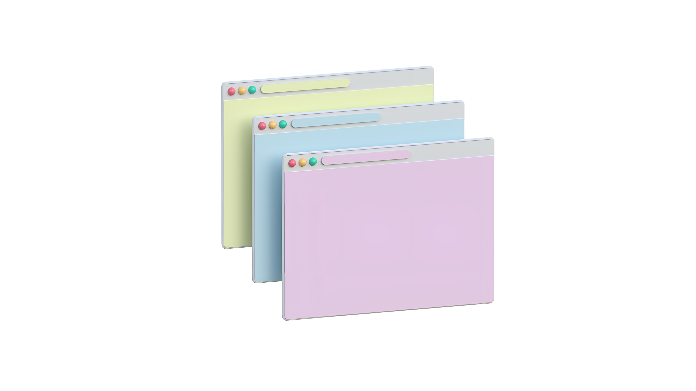

CSS는 사용자에게 문서를 표시하는 방법을 지정하는 언어입니다 — 스타일, 레이아웃 등. 문서는 일반적으로 마크 업 언어를 사용하여 구성된 텍스트 파일입니다 — HTML 이 가장 일반적인 마크 업 언어이지만, SVG 또는 XML 과 같은 다른 마크 업 언어를 사용할 수도 있습니다. 사용자에게 문서를 제공 한다는 것 은 대상이 사용할 수 있는 형식으로 문서를 변환하는 것을 의미합니다. Browsers, Firefox, Chrome 똔는 Edge 는 컴퓨터 화면, 프로젝터 또는 프린터 등의 문서를 시각적으로 표시하도록 설계되었습니다.
CSS 는 매우 기본적인 텍스트 문서 스타일링에 사용될 수 있습니다 — 예를 들어, 제목 및 링크의 색상과 크기 변경. 또한, 레이아웃을 만드는 데 사용 할 수 있습니다 — 예를 들어, 단일 텍스트 열을 변환 (기본 콘텐츠 영역과 관련 정보에 대한 사이드 바가 있는 레이아웃으로) 하는 등 레이아웃을 만드는 데 사용 할 수 있습니다. 애니메이션 과 같은 효과에도 사용 할 수 있습니다. 구체적인 예는 이 단락의 링크를 살펴보세요.